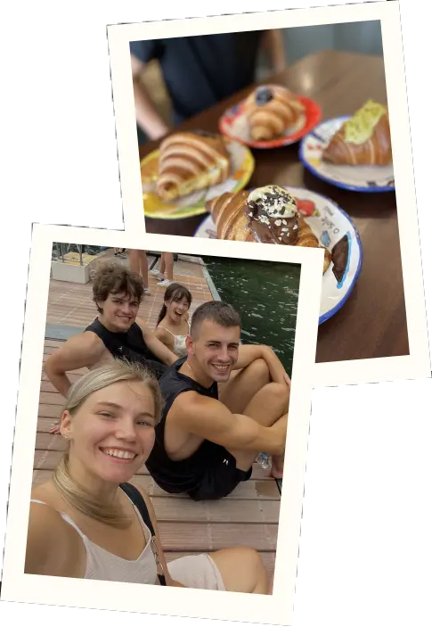
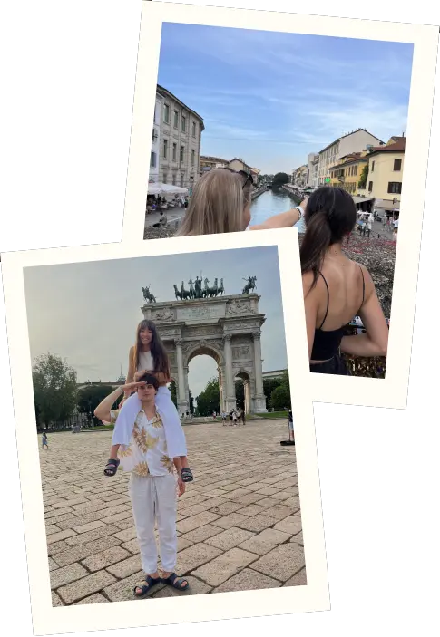

MILAN
Milan is a city that moves fast but rewards those who take the time to look beyond the surface. Fashion, art and history exist side by side in a way that feels completely natural.
Why This Trip Matters To Me
Milan was a trip that surprised me in the best way. I expected a city focused entirely on fashion and shopping, but what I found was a place with real depth — stunning architecture, incredible food and a creative energy that runs through everything.
It has a different pace compared to other Italian cities, more driven and modern, but that contrast made it interesting. It felt like a city that knows exactly what it is and does not need to prove anything.

Favourite Parts Of Milan
The Duomo was an obvious highlight — you cannot really prepare yourself for how enormous and detailed it is up close. But my favourite moments were the smaller ones, exploring the Navigli district in the evening and just taking in the atmosphere.
Milan also has some of the best aperitivo culture I have experienced. Sitting outside with a drink as the city winds down for the evening is something I would happily go back for on its own.
